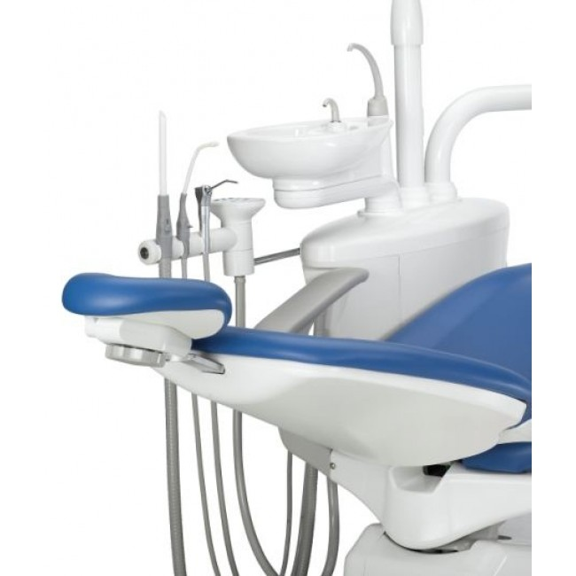

Cтоматологическая установка с верхней подачей инструментов.
Производитель: A-dec, Inc. Страна: США
Регистрационное удостоверение: ФСЗ 2011/10157
Уточняйте спецификацию, комплектацию, характеристики, внешний вид, наличие на складе и цену товара у менеджеров нашей компании. Указанные цены на сайте не являются публичной офертой.
Характеристики Adec-200
A-dec 200 включает в себя стоматологическое кресло, рабочее место врача, рабочее место ассистента, стоматологический светильник и центральный опорный блок с плевательницей
Долговечность: с системой A-dec 200 вы получите надежное стоматологическое оборудование, разработанное для непрерывного использования на протяжении многих лет.
Улучшенные характеристики: система A-dec 200 разработана для того, чтобы обеспечить индивидуальные потребности врачей и повысить комфорт для пациентов благодаря удобному скольжению кресла, эффективному управлению с помощью сенсорной панели и усовершенствованной работе светильника.
Удобство: все стоматологическое оборудование, необходимое для современного и технологичного стоматологического кабинета, — в одной системе.
Подробное описание Adec-200
Стоматологическое кресло
Двухшарнирный подголовник. Легкость регулировки и повышенный комфорт для вас и ваших пациентов.
Запирающиеся двухпозиционные вращающиеся подголовники. Не создает препятствий на пути пациента к креслу и от него.
Надежная гидравлическая система подъема. Обеспечивает ультратихое и ровное перемещение кресла.
Эргономично синхронизированное перемещение сиденья. Поддерживает комфорт пациента во время движения кресла.
Источник питания 300 Вт. На более чем достаточном уровне питает всю систему; обеспечивает освещение и работу дополнительных устройств.
Рабочее место врача
Открытая конструкция платформы. Позволяет добавлять новые устройства по мере изменения методов лечения и появления новых технологий.
Пять регулируемых держателей. Может поворачиваться, позволяя вам располагать инструменты для достижения максимального комфорта.
Интегрированная рабочая поверхность. Достаточно места для двух стандартных столиков.
Регулируемая рукоятка. Расположена так, чтобы вы могли с легкостью установить рабочее место врача под нужным вам углом.
Дополнительная сенсорная панель. С ее помощью можно управлять креслом, светильником и плевательницей — функциональность на кончиках ваших пальцев.
Автономная система обслуживания водопровода. Включает 2-литровую бутыль воды, усовершенствованный блок управления и трубопровод AlphaSan Для освобождения от забот по обслуживанию водопровода добавьте инновационную таблетку ICX для его обработки.

Рабочее место ассистента
Телескопический держатель. Обеспечивает удобный доступ к вакуумному инструментарию при выполнении стоматологических процедур в две или четыре руки.
3-позиционный держатель. Включает в себя отсос высокой производительности (HVE), слюноотсос (SE) и дополнительно — пистолет и сенсорную панель.
Регулируемые держатели. Вращается в группе или поворачивается отдельно, позволяя располагать инструменты так, как это удобно врачу.
Стоматологический светильник
Трехосевая головка светильника. Позволяет располагать светильник под углом, удобным для вас и вашего пациента.
Функция автоматического включения/выключения с дополнительной сенсорной панелью. Автоматически включает стоматологический светильник при достижении креслом позиции для лечения и выключает его в положении входа/выхода.
Две настройки интенсивности освещения. Включает в себя режим высокой и комбинированной освещенности, который снижает риск преждевременного начала лечения.
Центральный опорный блок с плевательницей
Устойчивая к загрязнениям фарфоровая плевательница. Для облегчения доступа может быть повернута к пациенту.
Автономная двухлитровая бутыль для воды. Обеспечивает постоянное поступление воды во время различных процедур.
Вместительный центральный опорный блок. Вмещает вспомогательные детали, такие как сепаратор амальгамы и вакуумная установка.